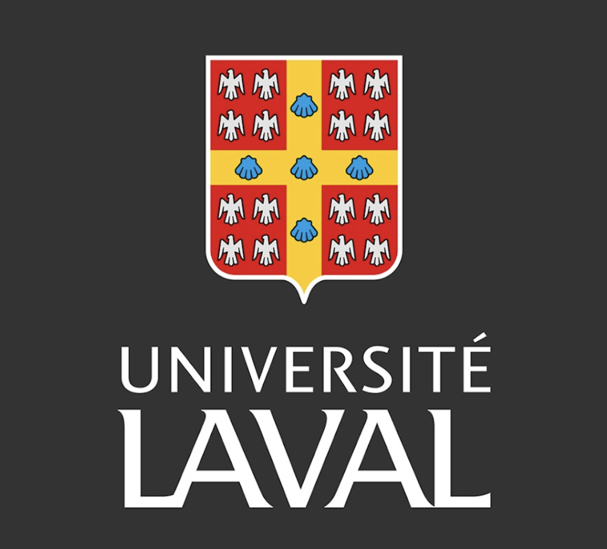

Étudiante à la maitrise
Maîtrise en études internationales – sécurité internationale
Diplômée
Baccalauréat en relations internationales
Certificat en gestion du renseignement et cybersécurité
Certificat en sécurité nationale
Mes réalisations
Conseillère sur les cybermenaces
Je surveille les tendances, les vulnérabilités et les menaces en cybersécurité.
Stagiaire
J’ai fait des recherches historiques pour concevoir de nouvelles expositions, participé à leur mise en place et appuyé l’équipe lors d’activités et d’événements publics.
Bénévole
J’ai offert un soutien académique à des élèves de la maternelle à la première année du secondaire et aidé des élèves issus de milieux hispanophones à améliorer leur anglais pour faciliter leurs apprentissages.
Publication en collaboration avec le département d’État des États-Unis
Dans le cadre de mes études à Florida International University, j’ai publié un article en collaboration avec le Department of State des États-Unis sur les partenariats public-privé. Cette expérience m’a permis de travailler avec une grande rigueur scientifique et d’acquérir de l’expérience auprès d’une agence gouvernementale.